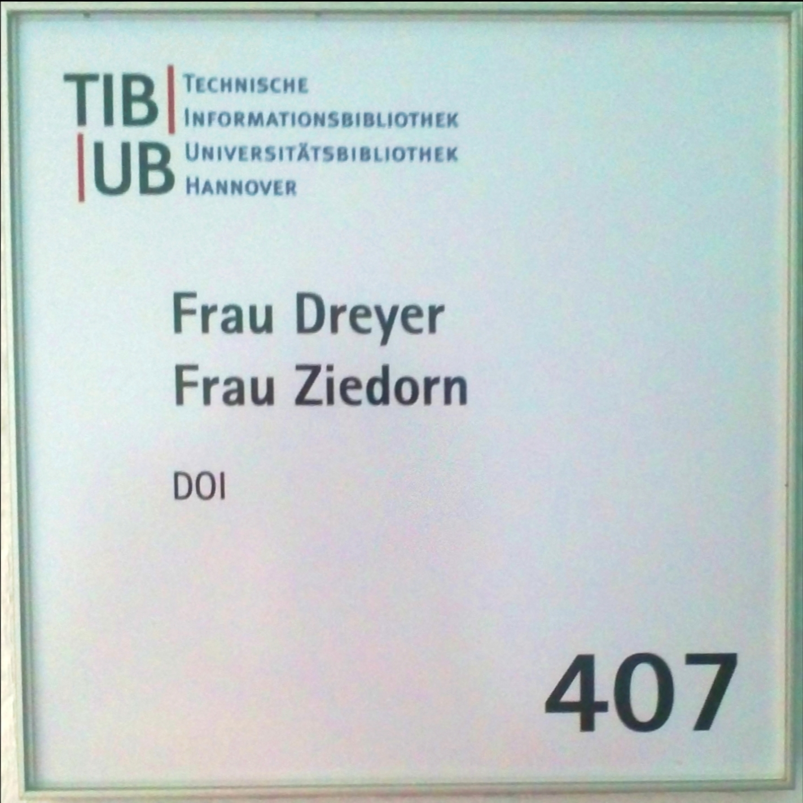

Liebe Britta,
wir wünschen Dir für deine neue Arbeitsstelle und den damit verbundenen neuen Aufgaben ganz viel Spaß und Erfolg. Wir hoffen, du hattest eine schöne Zeit bei uns, in der Du auch viel gelernt hast - nicht nur über Forschungsdaten und DOIs. Deine stete Fröhlichkeit wird uns fehlen, aber auch Dein ganz besonderes Engagement und Dein unnachgiebiger Einsatz im Team DOI-Service, im Projekt KomFor und im AK Forschungsdaten.
Für Deine berufliche Zukunft wünschen wir Dir ebenso viel Kraft und Mut wie Durchsetzungsvermögen, vor allem in einem möglicherweise „männerdominierten“ Umfeld. Und wer weiß, vielleicht bekommt irgendwann auch mal ein (digitales) Fahrzeugkarosserieteil der Firma Dreyer einen DOI. Falls nicht, hast Du immer noch einen ganz persönlichen DOI!
Alles Gute wünscht Dir dein DOI-Service-Team
Janna, Frauke, Sebastian und Jan
Und natürlich gehört dazu auch Irina Sens!
Von uns persönlich
Liebe Britta,
es ist wirklich schade, dass wir nun unsere "Büro-Mutti" verlieren. Dein Organisationstalent, deine Fürsorge und auch dein untrüglicher Kleidungsgeschmack werden mir sehr fehlen! Und wer schreibt uns nun die perfekten Grußkartentexte?
Aber ich bin sicher, dass du in der Firma deines Mannes auch sehr erfolgreich sein wirst. Insbesondere das Personalmanagement wird dir gut gelingen, denn du hast eine wirklich gute Menschenkenntnis.
Alles Liebe wünscht Dir
Frauke
Liebe Britta,
auf deine Ideen und Ratschläge war immer Verlass und dafür danke ich dir ganz herzlich.
Deinen Humor, deine fröhliche Art und dein strahlendes Gesicht werde ich arg vermissen.
Für den neuen Job alles Gute und Glück, und denke mal an uns zurück.
Anna
Komfor
Zur Erinnerung an das Projekt Komfor hier ein quasi historisches Dokument: Ein Gruppenbild von 2007!
Von links nach recht:
Jens Klump, Michael Lautenschlager, Michael Diepenbroek, Jan Brase, Beate Hildebrand, Oliver Schindler, Heinke Hoeck, Irina Sens und Hannes Grobe

Deine Büros
Damit du nicht vergisst, wie es bei uns aussah, hier noch ein paar Fotos aus Haus 2 und vom Klagesmarkt:

In Haus 2:

und am Klagesmarkt: